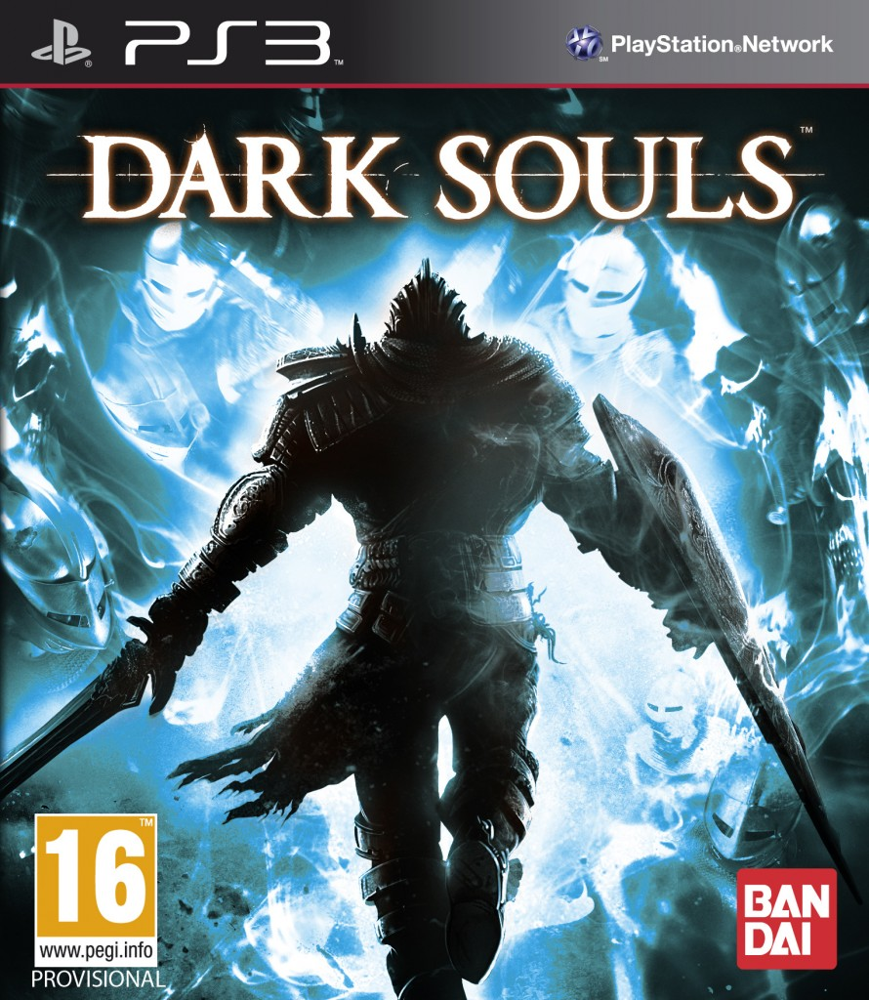

Welcome to Dark Souls!

Dark Souls is an action role-playing video game set in a dark fantasy universe full of danger and discovery.
Gamers call it one the most difficult games of this generation due to its emphasis on trial-by-error
gameplay and an expectation to explore the world naturally; absent of a traditional narrative structure.
Becoming a master of Dark Souls is all about knowing your enemies and surroundings,
as well as bringing the right tools to each engagement.
While the game does an excellent job at pointing out your mistakes,
it rarely suggests ways to better undertake its challenges.
This website offers itself as a guide for new players by illuminating the game's obtuse game mechanics,
as well as offering insight on how to progress your character efficiently.
Remember to always stay on your toes, and don't you dare go hollow.